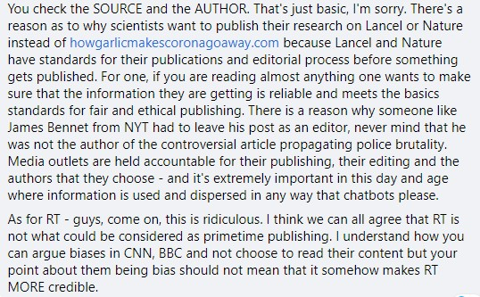

nah it doesn't
there is no evidence from the current outbreak that has shown eating garlic has protected people from the new coronavirus.
read the article that inspired the facebook comment below that inspired this website.
